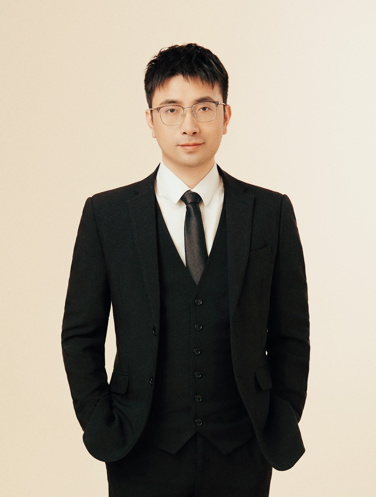

苏益品 （Yipin Su）
研究员，浣江实验室
浙江大学平台“百人计划”研究员、博士生导师
国家级高层次青年人才（海外） · 浙江省杰出青年基金获得者
联系方式：
浙江省诸暨市文种南路7号，浣江实验室

个人简介
苏益品，浣江实验室研究员，浙江大学平台“百人计划”研究员，绍兴大学研究员，国家级高层次青年人才（海外）、浙江省杰出青年基金获得者。2011年本科毕业于武汉大学工程力学专业，2016年博士毕业于浙江大学固体力学专业，随后赴爱尔兰、以色列、美国、意大利等开展研究工作。主要从事智能柔性材料与结构、多场耦合力学及智能传感器研究。曾入选爱尔兰、意大利国家博士后资助项目、绍兴市“名士之乡”人才计划及中国力学学会青年人才“蓄水池”计划。现任《Mechanics of Advanced Materials and Structures》编委、《应用数学和力学》青年编委，曾任《Soft Science》青年编委（2021.06–2023.06）。
现任职务
2023.05–至今
研究员
浣江实验室，浙江诸暨
2023.11–至今
平台“百人计划”研究员、博士生导师
浙江大学，浙江杭州
2026.04–至今
研究员
绍兴大学，浙江绍兴
教育经历
2015.09–2016.05
应用数学，访问博士生（导师：
M. Destrade)
爱尔兰国立大学戈尔韦，爱尔兰戈尔韦
2011.09–2016.12
固体力学，博士（导师：
W. Chen)
浙江大学，浙江杭州
2007.09–2011.07
工程力学，工学学士
武汉大学，湖北武汉
荣誉与人才计划
2025
浙江省杰出青年基金获得者
2023
国家级高层次青年人才（海外）
2023
青年人才“蓄水池”计划
中国力学学会
2022
绍兴市“名士之乡”英才计划B类青年人才
浙江绍兴
2019
欧盟“地平线2020”科研计划与意大利政府青年学者培养计划
2017
爱尔兰政府博士后基金
2014, 2016
浙江大学优秀研究生
2015
浙江大学魏绍相奖学金
学术服务
2022.01–至今
Mechanics of Advanced Materials and Structures
编委
2021.06–2023.06
Soft Science
青年编委
2023.07–至今
Applied Mathematics and Mechanics (Chinese)
青年编委
2020
International Journal of Non-Linear Mechanics
专刊：
“Nonlinear Theory of Electro- and Magneto-Elasticity”
客座编辑：苏益品、Michel Destrade、陈伟球
主持科研项目
[11] 2027.01–2030.12
53万元
国家自然科学基金面上项目
粘弹性磁活性水凝胶的多场耦合力学行为与调控机制研究
[10] 2026.01–2028.12
80万元
浙江省自然科学基金杰出青年项目
动态偏场下水凝胶材料与结构的力学行为研究
[9] 2025.01–2027.12
30万元
国家自然科学基金青年科学基金项目
生物软组织电磁耦合生长力学
[8] 2024.01–2026.12
100万元
国家自然科学基金优秀青年科学基金项目（海外）
智能柔性材料与结构多场耦合力学
[7] 2024.01–2024.12
30万元
国网浙江省电力有限公司合作项目
浙江电力产业链运行监测
[6] 2023.01–2025.12
6万元
中国力学学会青年人才“蓄水池”计划
[5] 2021.05–2022.12
114万元
米兰理工大学博士后项目
聚合物凝胶的多场耦合力学
[4] 2019.12–2021.04
90万元
南加州大学博士后研究基金
自愈合材料的力学分析与器件设计
[3] 2019.07–2019.08
3万元
意大利政府访问学者基金
介电环形体的非线性变形与失稳分析
[2] 2017.10–2019.09
70万元
爱尔兰政府博士后基金
电磁力耦合材料与结构的稳定性分析
[1] 2015.11–2016.05
6万元
浙江大学博士生海外访学基金
介电结构中的波动分析